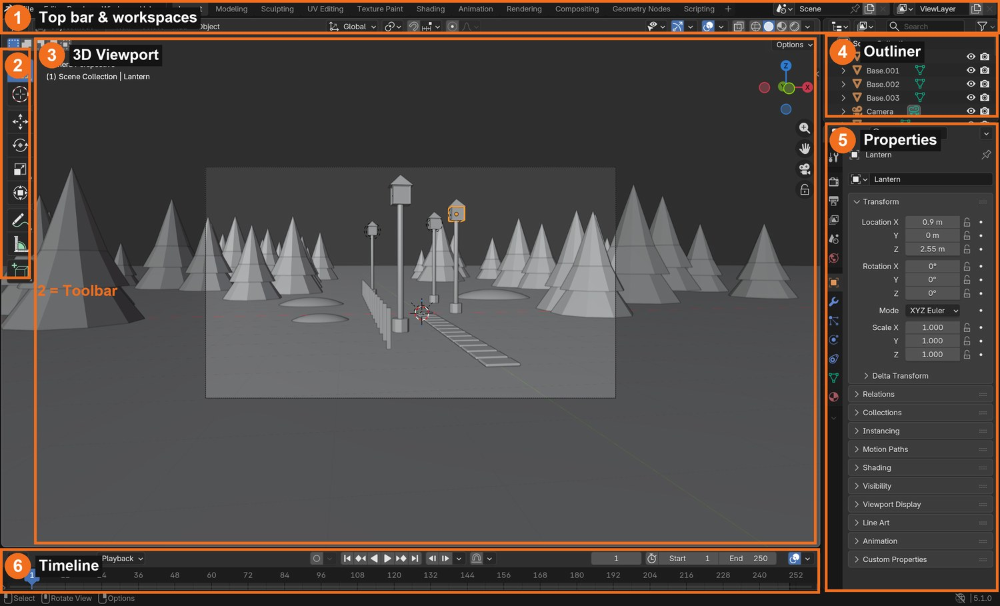
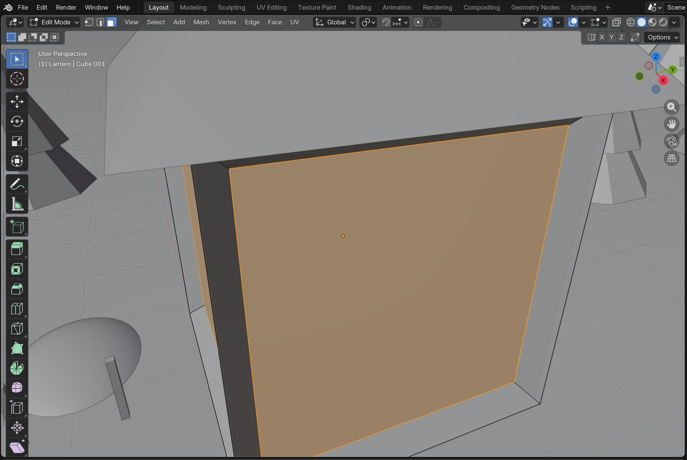
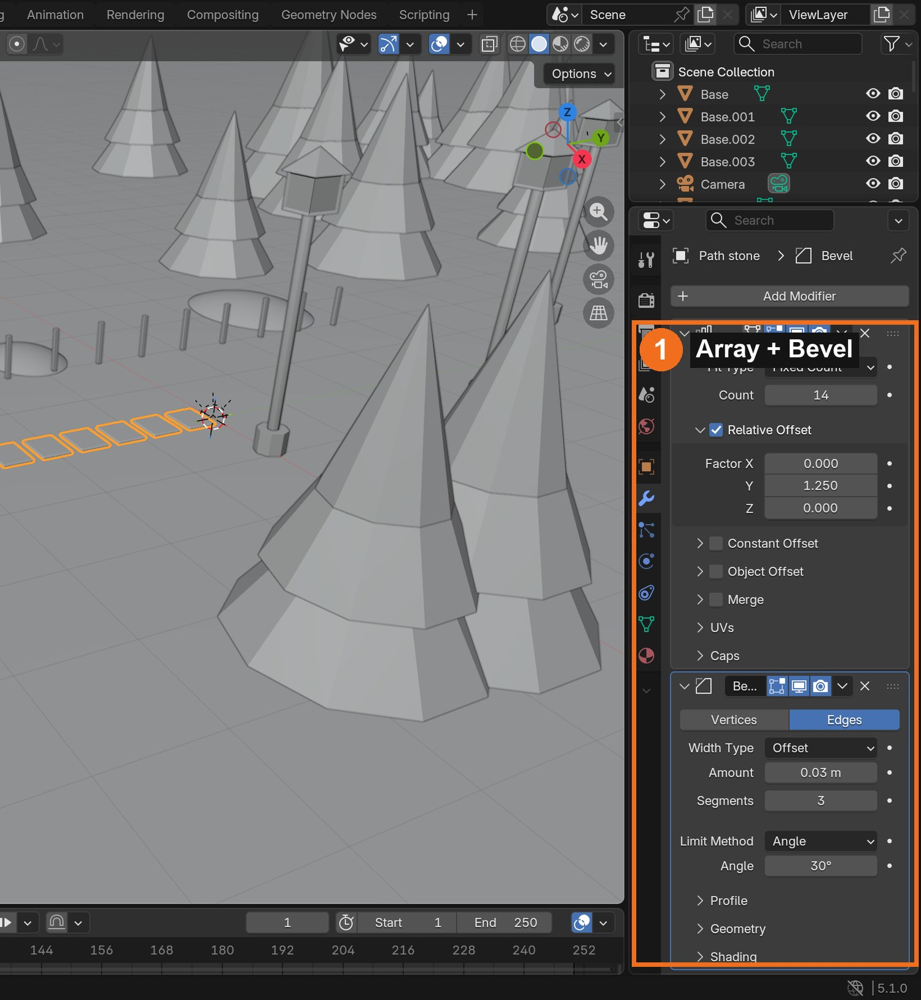
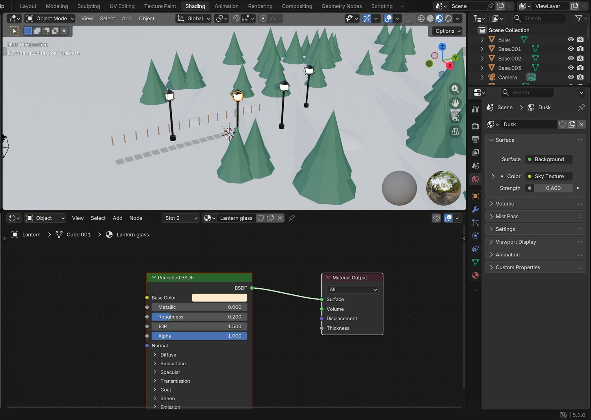
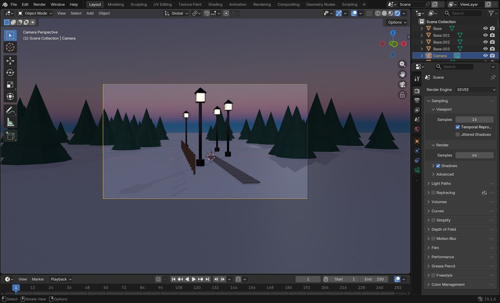
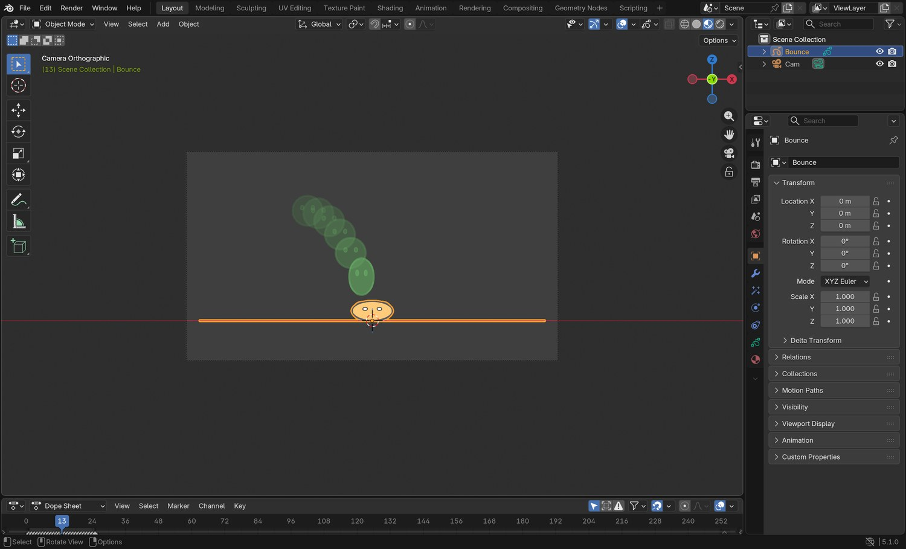
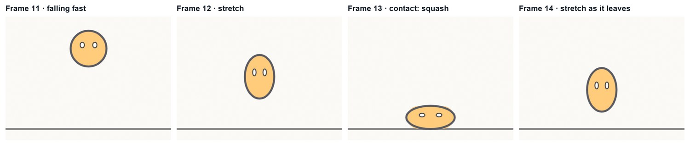
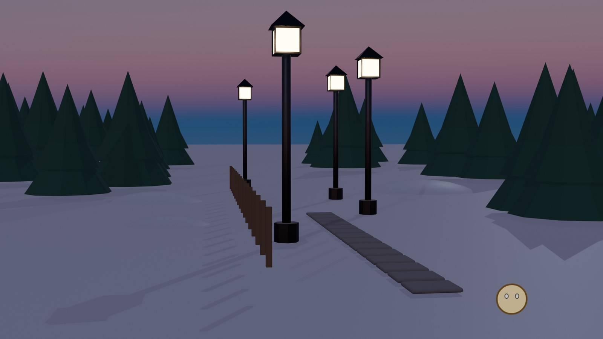

Blender · Multimedia 12 · Sprint 6 · Lessons 1–9 · animation and virtual production, part 1
BLENDER BOOTCAMP.
Join Lantern Lane, a small animation studio. Build a 3D winter set, animate a 2D character with the principles of animation, put the two together, and earn your Blender Licence.
The demo set, built and rendered in Blender 5 with the same steps as this bootcamp. Yours is your own design.
Earn your Blender Licence.
Three levels, like a real studio’s onboarding: navigation, then a modelled and lit set, then animation. Each level unlocks the next part of the unit.
My supports
Turn on any help you want. Your teacher may have set some for you. They change how the guide helps, not what is assessed.
Studio brief
Lantern Lane needs a 5-second studio ident.
The studio’s ident shows its mascot, a little lantern spark, bouncing down a winter lane and lighting the last lantern. You will build the 3D set, draw and animate the spark in 2D with Grease Pencil, combine them, and render the ident. Then the producer will change the brief.
You will hand in
Bootcamp_YourName.blend (set) and Spark_YourName.blend (2D)
A still render (Licence 2)
A 5-second MP4 ident (Licence 3)
A three-sentence explanation of your changed brief
This unit
Bootcamp (this sprint) → 3D character animation and After Effects motion graphics → a virtual production capstone where you put yourself into a 3D world on the green screen.
Blender is free, open-source software used by independent studios, YouTube creators and on award-winning films. The same file can hold 3D sets and 2D Grease Pencil animation, which is why studios use it for 2D-on-3D series and storyboards. Solo creators like Ian Hubert and Drifting Walnut make cinema-style shots in Blender alone, which is where this unit ends up.
The 12 principles of animation, first described by Disney animators, still guide every animator today, from hand-drawn to 3D. You will use four of them this sprint: timing, spacing (slow in, slow out), squash and stretch, and anticipation. V2
Knowledge first
How 3D and animation work.
3D space
Every object has a location, rotation and scale on three axes: X (red, left/right), Y (green, front/back) and Z (blue, up/down). Typing values on an axis is precise and repeatable.
Modelling
Objects are made of vertices, edges and faces. Edit Mode changes them; modifiers (Bevel, Array, Solidify) add detail without destroying the original.
Materials and light
Materials describe surfaces (colour, roughness, metal, glow). Light sets time and mood. Warm practical lights against a cool sky reads as dusk in winter.
The camera
The lens (focal length) and height change the feeling: wide and low is dramatic, eye level is natural. Composition guides the eye.
Animation principles
Timing is how many frames an action takes. Spacing is how far things move between frames: gravity makes objects slow at the top and fast near the ground. Squash and stretch shows weight while keeping volume. Anticipation prepares the audience for an action.
Design principles in a shot
Emphasis: the brightest, most contrasting thing (the glowing lantern, the moving spark) is seen first. Contrast: warm against cool, moving against still. Balance: place the subject on a third, not in the dead centre.
Lighting · BL-LGT-01 · Match light and colour · PS-LGT-02
Steps 6–7
Camera · BL-CAM-01 · Hierarchy · GD-HIE-01
Step 8
Render · BL-RND-01
Steps 9 and 16 (Licence 2 and 3)
Animation principles (timing, spacing, squash and stretch, anticipation)
Steps 10–15 and the practical check
Primary achievement evidence: the changed-brief ident (step 15), plus the Licence 3 observation. Guided steps, supports and licence practice are recorded separately from achievement. Sprint mm12-26-s06; outcomes 2.1–2.5.
Session A · Lesson 1 · mm12-26-s06-d01
Report to the studio. Earn Licence 1.
You are a new junior artist at Lantern Lane, a small animation studio. Today you learn to move around Blender like a pro.
TODAYSet up and tour (20 min), navigate (20 min), select and transform (25 min). Licence 1 check at the end.
01
Set up your project and learn the layout
IN SHORTNew General file; find six areas; tour Properties tabs; Save As in a project folder.
READ ALOUD
DOCUMENT: Blender 5.2 · Bootcamp_YourName.blend SELECT: The default Layout workspace TOOLS / ROUTE: File › New › General · File › Save As
Open Blender 5.2 and choose File › New › General.
Find the six areas: top bar and workspaces (1), Toolbar (2), 3D Viewport (3), Outliner (4), Properties (5), Timeline (6).
Click through the Properties tabs on the left edge (object, modifiers, materials) and watch the panel change.
Choose File › Save As, make a folder Blender_Bootcamp_YourName and save as Bootcamp_YourName.blend.
Turn on auto-save habits: press Ctrl/Cmd+S after every step from now on.
Blender Licence 1
Navigate, select, move/rotate/scale on an axis, save correctly. Unlocks: modelling.
Blender Licence 2
Model with edit mode and modifiers; materials, light and camera; a clean EEVEE render. Unlocks: animation.
Blender Licence 3
Animate with timing, spacing and squash and stretch; combine 2D and 3D; render a shot. Unlocks: the 3D animation sprint.
Workspace: A saved screen layout for a job, such as Modeling or Shading
Outliner: The list of every object in the scene

Real Blender screenshot: the six areas of the Layout workspace you will use every lesson.
WHYEvery studio file lives in a named project folder. Knowing where each area is means you can follow any tutorial or teammate instantly.
CHECKYour file is saved in its own folder, and you can point to all six areas by name.
FIXA panel disappeared? View › Area and the header menu can bring it back, or File › New › General to start fresh.
WORKED EXAMPLE · DIFFERENT OBJECTThe studio demo file is organised into collections: Set, Props, Lights, Camera.
STRETCH (AFTER THE CHECK PASSES)Create a collection called SET in the Outliner (right-click › New Collection) and move the cube into it.
Method basis: B1 · V1. Values and sequence are authored for this project.
02
Navigate the 3D viewport
IN SHORTOrbit, pan, zoom; Numpad 1/3/7 and 5; Numpad . and Home.
READ ALOUD
DOCUMENT: Bootcamp_YourName.blend SELECT: The viewport view (not the objects) TOOLS / ROUTE: Middle mouse · Shift+middle · scroll · Numpad 1/3/7 · Numpad 5 · Home
Orbit with the middle mouse button (or the gizmo at the top right). Pan with Shift+middle mouse. Zoom with the scroll wheel.
Press Numpad 1 (front), 3 (right) and 7 (top). Press Numpad 5 to switch between perspective and orthographic.
Select the cube and press Numpad . to frame it. Press Home to see everything.
No numpad? Turn on Edit › Preferences › Input › Emulate Numpad, or use the gizmo axes.
Practise: get a front view, then a top view, then back to perspective, without touching the mouse menus.
STEP CHECKLIST
GLOSSARY
Orthographic: A view without perspective, used for accurate alignment
WHYFast navigation is the difference between fighting Blender and using it. Every later skill assumes you can look at anything from any side.
CHECKYou can reach front, right, top and perspective views and frame a selected object without menus.
FIXView spins wildly? Press Numpad . on the object or Home. Laptop trackpad? Two-finger drag orbits; Shift+two-finger pans.
WORKED EXAMPLE · DIFFERENT OBJECTStudio artists keep one hand on the keyboard shortcuts and one on the mouse at all times.
STRETCH (AFTER THE CHECK PASSES)Try walk navigation: View › Navigation › Walk Navigation (WASD), then press Esc.
Method basis: B1. Values and sequence are authored for this project.
03
Select, move, rotate, scale — on an axis. Licence 1 check.
IN SHORTSelect; G/R/S; axis letters; type numbers; N sidebar; build a post; Licence 1.
READ ALOUD
DOCUMENT: Bootcamp_YourName.blend SELECT: Objects: cube, light, camera TOOLS / ROUTE: Click select · G, R, S · X/Y/Z to lock an axis · type a number · N sidebar
Click to select an object; Shift+click to add; A selects all, Alt+A selects none.
Press G to move, R to rotate, S to scale. Then press X, Y or Z to lock to that axis, type a number, and press Enter (for example: G Z 2 Enter).
Press N to open the sidebar and read the exact Location, Rotation and Scale values.
Add › Mesh › Cylinder and make a simple post: scale it thin (S Shift+Z 0.1) and tall (S Z 8).
Licence 1 check: your teacher calls out three transforms (for example “move the cube 3 on X, rotate 45 on Z”) and watches you do them.
STEP CHECKLIST
GLOSSARY
Transform: Move, rotate or scale
Axis lock: Restricting a transform to X, Y or Z
WHYPrecise transforms on an axis are how pros place things exactly, not by eye. Typed values make your work repeatable and editable.
CHECKYou pass the three called-out transforms, and your post is a thin, tall cylinder with scale shown in the sidebar.
FIXMoved the wrong thing? Ctrl/Cmd+Z undoes. Object won’t lock to an axis? Press the letter after G/R/S, not before.
WORKED EXAMPLE · DIFFERENT OBJECTWorked on a different prop: a student built a fence rail by scaling a cube S X 3, S Z 0.1, then moved it G Z 1.
STRETCH (AFTER THE CHECK PASSES)Use Shift+D to duplicate the post and G X 2 to place a row of posts.
Method basis: B1. Values and sequence are authored for this project.
Session B · Lesson 2 · mm12-26-s06-d02
Model a prop.
Build a street lantern for the studio’s winter set: edit mode shapes it, modifiers do the repetitive work.
TODAYEdit mode: extrude and inset (35 min), modifiers (30 min).
04
Shape it in Edit Mode: extrude, inset, loop cut
IN SHORTCube head; face select sides; inset individual; extrude in; cone roof; check views.
READ ALOUD
DOCUMENT: Bootcamp_YourName.blend SELECT: The lantern head (a cube) and the post TOOLS / ROUTE: Tab · 1/2/3 (vertex/edge/face) · E extrude · I inset · Ctrl+R loop cut
Add a cube for the lantern head, scale it to 0.34 m and put it on top of your post.
Press Tab for Edit Mode and 3 for face select. Select the four side faces (Shift+click).
Press I, then I again (inset individual) and drag to make a frame around each face; then E and move slightly inward to make glass panes.
Add a roof: Add › Mesh › Cone with 4 vertices, rotated 45°, on top.
Press Tab to return to Object Mode. Check it from all sides (Numpad 1, 3, 7).
STEP CHECKLIST
GLOSSARY
Edit Mode: The mode for changing an object’s vertices, edges and faces
Inset: Creates a smaller face inside a face

Real screenshot: Edit Mode, face select, with an inset glass pane selected on the lantern head.
WHYEdit Mode is where shapes are made. Extrude and inset turn simple blocks into believable objects in a few keystrokes.
CHECKA lantern head with four inset glass panes, a roof, sitting cleanly on the post.
FIXInset joined into one big frame? Press I twice for individual insets. Faces pushed outward? Move the extrusion the other way.
WORKED EXAMPLE · DIFFERENT OBJECTThe demo lantern uses exactly this: one inset per side, pushed in 2 cm, with the pane faces given a glowing material later.
STRETCH (AFTER THE CHECK PASSES)Add a hanging hook with a torus (Add › Mesh › Torus) scaled small.
Method basis: B4 · V1. Values and sequence are authored for this project.
05
Let modifiers do the work: Bevel, Array, Solidify
IN SHORTBevel the post; Array the path and fence; try Solidify; toggle modifiers.
READ ALOUD
DOCUMENT: Bootcamp_YourName.blend SELECT: The post, a path stone, a fence post TOOLS / ROUTE: Properties › Modifiers (wrench) › Add Modifier
Select the post. Add Modifier › Generate › Bevel: Amount 0.01 m, Segments 2. Edges now catch the light.
Make a path stone (a flattened cube) and add Array: Count 14, Relative Offset Y 1.25. Then add a Bevel for soft edges.
Make a thin fence post and add Array: Count 16, Relative Offset Y 12.
Try Solidify on a plane to give it thickness, then remove it with the X on the modifier.
Toggle each modifier’s eye icon on and off to see what it does. Save.
STEP CHECKLIST
GLOSSARY
Modifier: A non-destructive operation stacked on an object
Array: Repeats an object a set number of times

Real screenshot: the path stone’s modifier stack, an Array of 14 stones and a Bevel for soft edges.
WHYModifiers are non-destructive: they change the result without destroying your original mesh, and you can edit them at any time.
CHECKA bevelled post, a 14-stone path and a fence from Array, all still editable in the modifier stack.
FIXArray going sideways? Change the Relative Offset axis (X, Y or Z). Bevel looks huge? Apply the object’s scale first (Ctrl/Cmd+A › Scale).
WORKED EXAMPLE · DIFFERENT OBJECTThe whole demo path is one stone and one Array modifier. Change the count and the path grows.
STRETCH (AFTER THE CHECK PASSES)Add a Curve modifier so the path bends along a curve you draw.
Method basis: B4. Values and sequence are authored for this project.
Session C · Lesson 3 · mm12-26-s06-d03
Materials and light.
Make it look like dusk in winter: materials say what things are made of, light says what time it is.
TODAYMaterials (30 min), world and lights (35 min).
06
Give every object a material
IN SHORTIron, Snow and Stone materials; a second Glass slot on the panes; emission; Material Preview.
Open the Shading workspace. Select the post, click New in the material panel, name it Iron: Base Color near black, Metallic 1, Roughness 0.35.
Snow ground: a big plane with a material Snow: near white, Roughness 0.45.
Glass panes: on the lantern add a second material slot Glass. In Edit Mode select the pane faces and click Assign.
In Glass set Emission Color to warm orange and Emission Strength about 30, so the panes glow.
Switch the viewport to Material Preview (the sphere icon) to check everything.
STEP CHECKLIST
GLOSSARY
Principled BSDF: Blender’s all-in-one material shader
Emission: Light given off by a surface

Real screenshot: the Shading workspace with the lantern’s glass material (Principled BSDF) in the node editor.
WHYMaterials tell the viewer what an object is: metal is dark and shiny, snow is bright and soft, glass glows when lit. Believable materials sell the world.
CHECKEvery object has a named material, the panes glow warm, and Material Preview shows iron, snow and stone clearly.
FIXWhole lantern glows? You assigned Glass to all faces: select only the panes in Edit Mode and Assign. Everything grey? Switch to Material Preview.
WORKED EXAMPLE · DIFFERENT OBJECTThe demo iron is Metallic 1, Roughness 0.35; the glass emits orange at strength 30.
STRETCH (AFTER THE CHECK PASSES)Add a slight colour variation to the stones with a Noise Texture into Base Color.
Method basis: B1. Values and sequence are authored for this project.
07
Light the set: sky, key and fill
IN SHORTSky Texture at dusk; point lights in lanterns; weak moon rim; check in Rendered.
READ ALOUD
DOCUMENT: Bootcamp_YourName.blend SELECT: World and lights TOOLS / ROUTE: World properties › Sky Texture · Add › Light (Sun, Point)
World properties: set Color to a Sky Texture. Lower the Sun Elevation to about −1° for just-after-sunset dusk, and Strength to about 0.6.
Add › Light › Point inside each lantern: warm orange colour, Power about 450 W, Radius 0.1 m.
Add a weak Sun as moonlight (Strength about 0.15, pale blue) and angle it from behind as a rim.
Switch the viewport to Rendered to see real lighting.
Adjust until the lanterns are the brightest thing and the snow picks up warm pools of light.
STEP CHECKLIST
GLOSSARY
Practical light: A light source visible in the scene, such as a lamp
Rim light: Light from behind that outlines a subject
WHYLighting sets time, mood and where the eye goes. Warm practical lights against a cool sky is a classic, readable winter look.
CHECKA dusk sky, warm lantern lights that pool on the snow, and a faint cool rim light, checked in Rendered view.
FIXScene all black? Check the World strength and that lights are not hidden. Everything orange? Lower the lantern power or raise the sky.
WORKED EXAMPLE · DIFFERENT OBJECTThe demo uses a Sky Texture at −1.5° elevation, 450 W lantern points and a 0.15 moon Sun.
STRETCH (AFTER THE CHECK PASSES)Add a Volume Scatter to the World for light mist.
Method basis: B1. Values and sequence are authored for this project.
Session D · Lesson 4 · mm12-26-s06-d04
Camera and render. Earn Licence 2.
A render is a photograph of your 3D world. Choose the lens and the frame like a cinematographer.
Press F12 to render. In the render window choose Image › Save As and save Bootcamp_Still_YourName.png.
Compare with the Rendered viewport: does the render match what you expected?
Licence 2 check: show your teacher the file (named objects, modifiers still live, materials, lights, camera) and the saved render.
STEP CHECKLIST
GLOSSARY
EEVEE: Blender’s fast real-time render engine
AgX: A colour transform that keeps bright lights looking natural

Real screenshot: Rendered viewport through the camera, with EEVEE settings in the Render properties.
WHYEEVEE renders in seconds, so you can iterate like a studio. A saved still is your first portfolio piece.
CHECKA saved 1920 × 1080 PNG render of your set, and a file your teacher signs off for Licence 2.
FIXRender is black? The camera is not the active camera: select it and press Ctrl/Cmd+Numpad 0. Too dark? Raise lights or World strength.
WORKED EXAMPLE · DIFFERENT OBJECTThe demo still renders in a few seconds on a classroom computer.
STRETCH (AFTER THE CHECK PASSES)Render a second still from a low, wide angle and compare the mood.
Method basis: B1. Values and sequence are authored for this project.
Session E · Lesson 5 · mm12-26-s06-d05
2D animation with Grease Pencil.
Now the studio’s mascot: a little lantern spark. You draw it frame by frame, as animators have for a hundred years, in Blender’s Grease Pencil.
TODAYDraw and layers (20 min), keyframes and onion skin (25 min), timing and spacing (20 min).
10
Draw your character in Grease Pencil
IN SHORT2D Animation file; Ink, Colour and Ground layers; simple silhouette.
READ ALOUD
DOCUMENT: New file: File › New › 2D Animation · Spark_YourName.blend SELECT: A simple round character on its own layers TOOLS / ROUTE: Draw mode · Draw brush · layers · colour
Choose File › New › 2D Animation and save it as Spark_YourName.blend.
In Draw mode, pick the Draw (pencil) brush from the asset shelf. Draw a round body and two eyes on a layer called Ink.
Add a layer Colour under Ink and paint the body colour and eye whites with a thick brush (or the Fill tool).
Add a layer Ground with one straight line: hold Shift while drawing for straight lines.
Keep it simple: a clear silhouette animates better than detail.
Turn on Onion Skin in the viewport Overlays, so you can see faint ghosts of the frames before.
Frame 1: the spark on the ground. Go to frame 7 and draw it at the top of the jump. Frame 13: back on the ground.
Fill the in-betweens: frames 2–6 rising, 8–12 falling. Draw a new drawing on each frame (the Dope Sheet shows a diamond per keyframe).
Move the spark a little to the right every frame, so it travels while it bounces.
Press Spacebar to play. Adjust any frame that jumps.
STEP CHECKLIST
GLOSSARY
Keyframe: A frame where you draw or set a key pose
In-between: Frames between key poses
Onion skin: Faint display of nearby frames

Real screenshot: onion skin shows the earlier frames as ghosts, and each drawing is a keyframe in the Dope Sheet below.
WHYOnion skin lets you see motion as you draw: each new frame is placed in relation to the last. This is the core of hand-drawn animation.
CHECKA 13-frame bounce that plays smoothly, travels forward, and has a keyframe on every drawn frame.
FIXNo ghosts? Turn on Onion Skin in Overlays and in the Grease Pencil data properties. Playback too fast? Set the frame rate to 24 fps in Output properties.
WORKED EXAMPLE · DIFFERENT OBJECTThe demo bounce has 13 drawings for one hop at 24 fps, about half a second.
STRETCH (AFTER THE CHECK PASSES)Add a second, smaller bounce (frames 13–25) to show the spark losing energy.
Method basis: B3 · B2. Values and sequence are authored for this project.
12
Fix the timing and spacing
IN SHORTClose spacing at the top, wide near the ground; hold the top; play; preview.
READ ALOUD
DOCUMENT: Spark_YourName.blend SELECT: The in-between drawings TOOLS / ROUTE: Onion skin · Dope Sheet · Edit mode to move drawings
Look at the spacing: at the top of the jump the drawings should be close together (slow); near the ground far apart (fast).
In Edit mode, select a drawing’s strokes and move them (G) to fix spacing. Keep keys 1, 7 and 13 where they are.
Timing: in the Dope Sheet, drag keyframes to hold the top pose a frame longer if it feels rushed.
Play and compare with a real ball: does it feel heavy or floaty? Adjust.
Save and render a quick preview (View › Viewport Render Animation).
Real frames of the demo bounce overlaid: close together at the top (slow), far apart near the ground (fast). That is spacing.
WHYTiming (how many frames) and spacing (how far apart) are what make motion feel real. Gravity makes things slow at the top and fast near the ground.
CHECKDrawings bunched at the top and spread near the ground, with a bounce that feels like it has weight.
FIXBounce feels robotic? The spacing is even: bunch the drawings near the top. Feels floaty? Use fewer frames.
WORKED EXAMPLE · DIFFERENT OBJECTAlan Becker’s “Timing and Spacing” principle shows the same ball chart.
STRETCH (AFTER THE CHECK PASSES)Try the same bounce as a bowling ball (fewer, heavier bounces) and a ping-pong ball (many light ones).
Method basis: V2 · B3. Values and sequence are authored for this project.
Session F · Lesson 6 · mm12-26-s06-d06
Give it life: squash, stretch, anticipation.
The difference between a moving shape and a character is in the principles of animation.
TODAYSquash and stretch (30 min), anticipation and follow-through (35 min).
13
Add squash, stretch and anticipation
IN SHORTSquash on contact; stretch in fast frames; keep volume; anticipation crouch; follow-through.
READ ALOUD
DOCUMENT: Spark_YourName.blend SELECT: The contact frame, the fast frames, the start of the jump TOOLS / ROUTE: Edit mode · Transform (S on one axis) · extra frames
Contact frame (13): squash the spark: wider and shorter (S X 1.35, then S Z 0.65), keeping its bottom on the ground.
The fast frames next to contact (12 and 14): stretch it along the direction of travel (taller and thinner).
Keep the volume: if it gets wider, it must get shorter.
Anticipation: before the first jump, add 2–3 frames where the spark crouches down, then launches.
Follow-through: if your spark has a flame on top, let it lag behind and overshoot as the body stops.
Squash and stretch: Changing shape to show weight and speed, keeping the same volume
Anticipation: A small opposite move before the main action

Real frames from the demo: stretch while falling fast, squash on contact, stretch again as it leaves the ground.
WHYSquash and stretch shows weight and flexibility; anticipation tells the audience something is about to happen. They turn a shape into a character.
CHECKA squash on contact and stretch in the fast frames with no change in volume, a clear anticipation crouch, and follow-through if there is a flame.
FIXSpark looks like it is shrinking? Keep the volume: wider means shorter. Anticipation invisible? Make the crouch lower and hold it a frame longer.
WORKED EXAMPLE · DIFFERENT OBJECTThe demo squashes to 135 % wide and 65 % tall on contact, and stretches to 82 % wide and 122 % tall on the frames around it.
STRETCH (AFTER THE CHECK PASSES)Add a little blink on the landing frame.
Method basis: V3 · V2. Values and sequence are authored for this project.
Session G · Lesson 7 · mm12-26-s06-d07
Put the 2D character into the 3D world.
Grease Pencil drawings live in 3D space, so your spark can bounce down the lantern lane you built.
TODAYLink the character into the set (25 min), animate the camera (40 min).
14
Bring the spark into your lantern lane and move the camera
IN SHORTAppend the spark; place and scale; Use Lights off; camera keys at 1 and 48; play.
READ ALOUD
DOCUMENT: Bootcamp_YourName.blend · Spark_YourName.blend SELECT: The spark object and the camera TOOLS / ROUTE: File › Append · scale and place · camera keyframes (I)
Open your lantern lane file. Choose File › Append, open Spark_YourName.blend › Object, and append the spark.
Scale and place it on the path near the first lantern. Rotate it to face the camera.
In the Grease Pencil layer settings, turn off Use Lights so the 2D colours stay flat and bright.
Animate the camera: at frame 1 press I on the camera (Location/Rotation); at frame 48 move it slowly forward along the path and press I again.
Play and check that the spark stays readable against the snow the whole time.
Append: Copy an object from another .blend file into this one
Camera move: Animating the camera to guide the viewer

Real render: the 2D Grease Pencil spark standing on the path of the 3D lantern lane.
WHYMixing 2D characters with 3D sets is a modern studio style (think of 2D-on-3D TV series). It is also your first step towards the virtual production capstone.
CHECKThe spark placed in the 3D set, flat and readable, with a smooth 2-second camera move.
FIXSpark looks dark or muddy? Turn off Use Lights on its layers. It disappears at some angles? It is flat: keep the camera in front of it.
WORKED EXAMPLE · DIFFERENT OBJECTThe demo spark stands on the path at about one-third of a lantern’s height, facing the camera.
STRETCH (AFTER THE CHECK PASSES)Make the camera move follow the spark with a Track To constraint.
Method basis: B2 · B3. Values and sequence are authored for this project.
Session H · Lesson 8 · mm12-26-s06-d08
The studio changes the brief.
Make the studio’s 5-second ident, then the producer changes one thing. You decide how.
TODAYIndependent 5-second ident with a changed brief (65 min).
15
Practical check: a 5-second ident with a changed brief
IN SHORTPlan 120 frames; read the card; decide; build; explain.
READ ALOUD
DOCUMENT: Both files · the producer’s card SELECT: Your whole shot TOOLS / ROUTE: Your own decisions
Plan a 5-second (120-frame) ident: the spark bounces down the lane and lights the last lantern; the studio name appears.
Read your producer card (below). It changes the timing, the camera or the mood.
Decide on your own what to change: keyframes, spacing, camera, lights, materials.
Build it in your file and check timing with playback at 24 fps.
Write three sentences: what changed, how you used timing, spacing or squash to do it, and one thing you would polish.
Card
The producer says
1 · Heavier
“The spark should feel heavy, like a snowball.”
2 · New camera
“Shoot it low and wide, from the ground.”
3 · Midnight
“Make it midnight: darker sky, stronger lantern glow.”
4 · Faster
“We only have 3 seconds.”
Independent evidence: the main achievement evidence for the bootcamp.
STEP CHECKLIST
GLOSSARY
Ident: A short animated logo sequence for a studio or channel
WHYA studio ident must work in five seconds. Responding to a changed brief on your own shows you understand the tools and the principles, not just the steps.
CHECKA 120-frame shot that meets the card, uses at least two animation principles on purpose, and an explanation.
FIXStuck? Change one thing at a time and play after each. (Independent step: the Coach can explain tools, not decide your changes.)
WORKED EXAMPLE · DIFFERENT OBJECTWorked example on a different shot: a “heavier” card made a student cut the bounce from 13 to 9 frames and double the squash.
STRETCH (AFTER THE CHECK PASSES)Add sound in the next sprint: plan where a “boing” and a whoosh would go.
Method basis: V2. Values and sequence are authored for this project.
Session I · Lesson 9 · mm12-26-s06-d09
Render, review, Licence 3.
Render your ident, show it, and defend your choices. Pass Licence 3 to move on to 3D character animation.
TODAYRender (25 min), screening and defence (40 min).
DOCUMENT: Bootcamp_YourName.blend SELECT: Your 5-second ident TOOLS / ROUTE: Output properties › FFmpeg video · Render › Render Animation
Output properties: frame range 1–120, 24 fps, File Format FFmpeg Video, Container MPEG-4, codec H.264.
Set the output path to your project folder and name it Ident_YourName_.
Render › Render Animation (Ctrl/Cmd+F12). Watch it back in a video player.
Screening: play it for the class. In two minutes explain one timing choice, one spacing or squash choice, and one lighting or camera choice.
Licence 3 check: your teacher checks the file (2D and 3D combined, animation principles, render settings) and signs you off.
STEP CHECKLIST
GLOSSARY
Render animation: Rendering every frame of a shot into a video or image sequence
WHYFinishing and presenting is part of the job. Explaining your choices with animation vocabulary shows you can direct, not just follow steps.
CHECKA 5-second MP4 of your ident, a defence using the principles, and Licence 3 signed off.
FIXRender takes too long? Lower samples in EEVEE or resolution to 50 % for a test. MP4 won’t play? Use H.264 in an MPEG-4 container.
WORKED EXAMPLE · DIFFERENT OBJECTThe demo ident renders in about two minutes at 1080p in EEVEE on a classroom computer.
STRETCH (AFTER THE CHECK PASSES)Export a GIF version for the studio’s social media (render PNGs, then combine).
Method basis: B1. Values and sequence are authored for this project.
Before you submit
Student QA.
Evidence conversation
Keep it short and specific.
SENTENCE FRAMESI used ___ so that ___. · The spacing is close at ___ because ___. · For the producer card I changed ___, which made the spark feel ___.
Figures marked Illustration are drawn, not screenshots. Step values are starting points authored for this project. Draft for teacher review; not yet classroom-piloted.